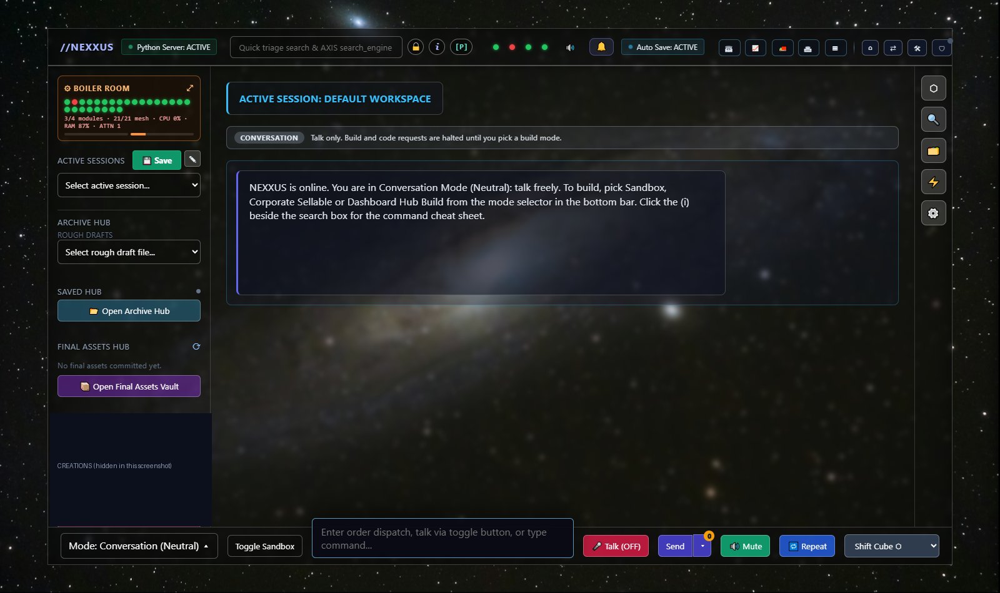

NEXXUS Sandbox
A local-first workspace built from independent, signed engines that talk through one bridge. Runs on your machine, stays on your machine, and only touches the folders you hand it.

Documentation
Quick start
- Start the stack. Run
START_NEXXUS.bat(orstart_all_engines.bat). Engines bind to loopback only by default. - Serve this page. Run
python site_server.py, then openhttp://127.0.0.1:8787. - Install it. Press Install app above. The service worker caches the shell so the page opens offline.
- Grant folders. Open Operator mode and add each folder you want NEXXUS to work in. Nothing else is reachable.
- Check health. Each engine answers
healthandping; a failing engine is reported without stopping the others.
Operator mode (v1 scope)
In v1, operator mode works only inside folders you explicitly grant. Anything outside a granted folder is refused, not prompted for.
- Access is an allow-list of folders, empty by default. Granting is a deliberate user action; revoking takes effect immediately.
- Paths are resolved to their real location before the check, so
..segments and symlinks cannot escape a granted folder. - Every operator action, allowed or refused, is written to the logs.
- Granting a folder does not grant its parents or siblings.
Architecture
you ──► NEXXUS hub (brain) ──► bridge ──► engine A (own process, own key)
├──► engine B
└──► engine … (21 total)
PWA shell (this page) ── static files + /api/* ──► site_server.py ──► logs/
| Part | Role |
|---|---|
| Engines | Independent silos. One OS process per call, per-engine keys. One dying does not stop the rest. |
| Bridge | Routes signed calls between the hub and engines. |
| Hub | Coordinates engines; the single point where results are combined. |
| axis gate | Signed manifests, drift detection, replay protection, sealed core. |
| PWA shell | manifest.json + sw.js cache the app shell under nexxus-v1. |
Mesh contract
Every engine answers four calls:
health | Is the engine alive and consistent? |
ping | Cheap liveness check. |
message | Deliver a message to the engine's inbox. |
instruct | Ask the engine to perform work. |
Security model
- Loopback-only by default; secrets redacted in logs.
- Failed signatures are refused, logged and quarantined; quarantined copies are inert.
- Admin token required for overrides.
- This site's server serves a fixed whitelist of files and caps all submitted text.
Status
| Pillar | State |
|---|---|
| Sovereign isolation | Built |
| Universal port (mesh contract) | Built |
| Hardened discipline (axis gate) | Built |
| Operational stealth | Partial not tested against outside scanning |
| Automatic escalation to containment | Partial |
| Bluetooth | Next needs hardware with a radio |
Source of truth: docs/VISION_AND_STATUS.md.
Community
Rate & comment
No ratings yet
Beta builder log
- Engines isolated21 engines, one process per call, per-engine keys.
- Mesh contract + axis gateUniform health/ping/message/instruct; signed manifests and drift detection.
- PWA shellInstallable page with offline shell cache.
- Operator mode v1Folder allow-list only. Feedback welcome below.
- Phone test over mobile dataThen lock remote access down again.
- BluetoothPending hardware with a radio.